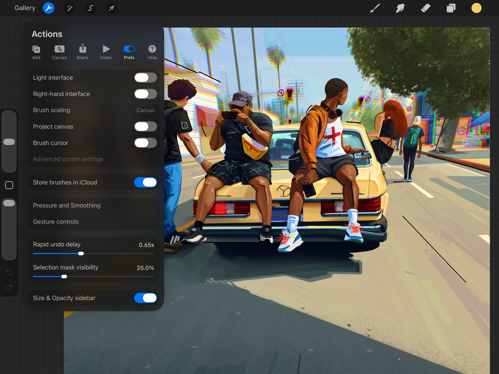
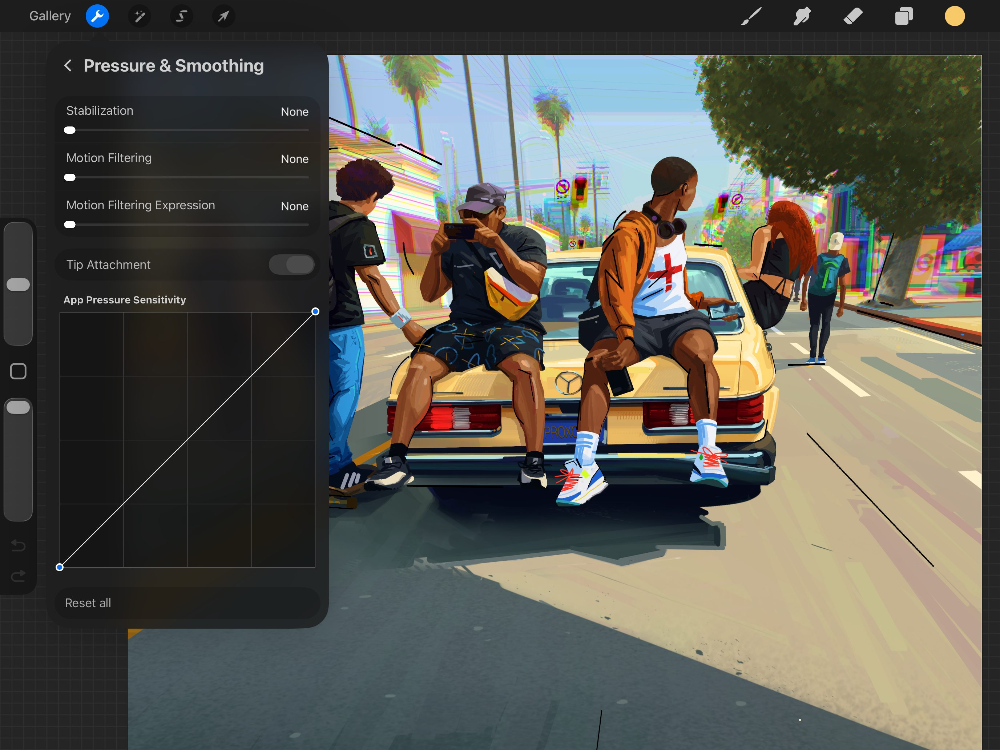
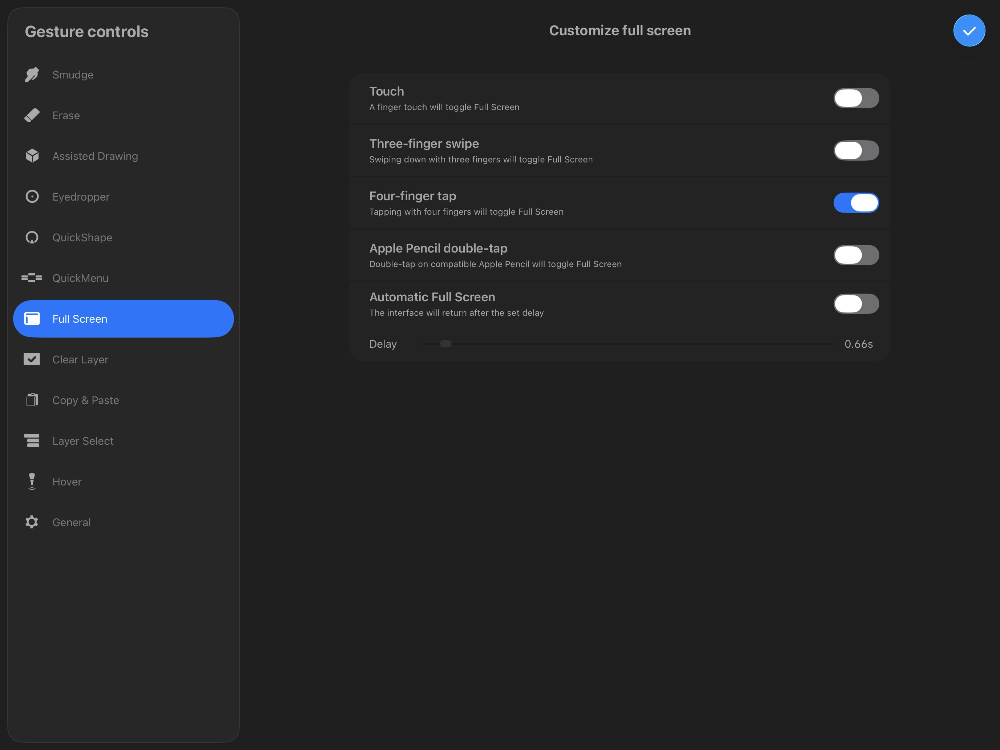
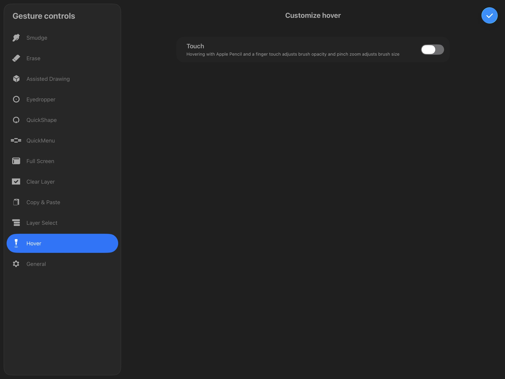

📖 Đã dịch sang tiếng Việt. Thuật ngữ chuyên môn giữ tiếng Anh — rê chuột để xem nghĩa (tooltip).
Preferences
Tùy chỉnh Procreate theo quy trình làm việc của bạn. Điều chỉnh giao diện hoặc nhân bản khung vẽ lên một màn hình đã kết nối. Thay đổi giao diện, tinh chỉnh Pressure Curve (đường cong áp lực), và cá nhân hóa Gesture Controls (điều khiển cử chỉ) cho phù hợp với phong cách làm việc.
Interface Appearance (diện mạo giao diện)
Tinh chỉnh giao diện Procreate để trông theo ý bạn.

Vào Actions → Prefs để đổi diện mạo và hành vi của giao diện Procreate. Thực hiện bằng một loạt công tắc và thanh trượt dễ dùng.
Giao diện Tối / Sáng
Giao diện Procreate cung cấp hai chế độ hiển thị. Dark Mode là giao diện màu than không gây distractory, giữ sự tập trung vào tác phẩm. Light Mode lý tưởng để có độ tương phản cao hơn khi bạn làm việc trong môi trường sáng.
Giao diện Left-hand / Right-hand (trái / phải)
Theo mặc định, thanh bên nằm ở bên trái màn hình. Bật công tắc Right-hand interface để di chuyển nó sang bên kia của khung vẽ.
Brush scaling (co dãn cọ)
Theo mặc định, Procreate tự động co dãn cọ khi bạn phóng to/thu nhỏ khung vẽ 2D hoặc 3D. Nghĩa là cọ giữ nguyên kích thước pixel bất kể bạn zoom in/out bao xa trên khung vẽ.
Chạm vào Brush scaling để hiện tùy chọn co dãn kích thước cọ theo không gian khung vẽ (relative to canvas) hoặc theo không gian màn hình iPad (relative to screen).
Project canvas (chiếu khung vẽ)
Kết nối màn hình thứ hai qua cáp hoặc AirPlay rồi bật Project Canvas. Màn hình thứ hai sẽ chỉ hiển thị khung vẽ của bạn, toàn màn hình - không có giao diện, zoom hay gián đoạn. Điều này giúp bạn làm việc trên các chi tiết nhỏ trong Procreate trong khi vẫn bao quát bức tranh tổng thể.
Con trỏ cọ
Khi bạn bật Brush Cursor, viền hình dáng Brush sẽ xuất hiện khi bạn chạm vào khung vẽ. Nhờ đó bạn có thể thấy trước hình dáng của nét bạn sẽ tạo.
Advanced cursor (con trỏ nâng cao)
Cài đặt Advanced cursor điều khiển diện mạo con trỏ khi vẽ và khi dùng hover (lơ lửng).
Brush cursor visibility (khả năng hiển thị con trỏ cọ)
Cài đặt này bật/tắt con trỏ hiển thị, có thể đặt thành Show while hovering (hiện khi lơ lửng), Show while painting (hiện khi vẽ) hoặc Show both (hiện cả hai).
Brush outline style (kiểu viền cọ)
Cài đặt này điều khiển kiểu dáng viền con trỏ. High contrast và Active color là các cài đặt đổi viền con trỏ trên toàn bộ Procreate.
Chọn High Contrast để hiển thị viền con trỏ thang độ xám, đổi màu linh hoạt tùy theo màu nền mà con trỏ nằm trên. Chọn Active color để hiển thị viền con trỏ theo Active Color đã chọn.
Chọn Per brush để tắt cài đặt toàn cục và kích hoạt cài đặt Cursor outline trong Brush Studio. Tìm hiểu thêm về cài đặt Cursor outline ở phần Apple Pencil trong Brush Studio Settings.
Store brushes in iCloud (lưu cọ trong iCloud)
Giờ đây Procreate lưu cọ bằng ứng dụng Files của iPadOS.
Bật tùy chọn này sẽ đặt ứng dụng dùng thư viện cọ trong iCloud Drive của bạn. Đường dẫn là Files → iCloud Drive → Procreate Brushes.
Nếu bạn tắt tùy chọn này, Procreate sẽ dùng thư viện cọ nằm cục bộ trên iPad theo đường dẫn Files → On My iPad → Procreate → Brushes.
Khi bạn bật/tắt tùy chọn này, Procreate sẽ hỏi bạn xác nhận và di chuyển 'All brushes' sang vùng lưu trữ mới, hoặc chỉ 'New brushes only'.
All brushes sẽ di chuyển toàn bộ bộ sưu tập từ vùng lưu trữ gốc sang vùng mới chọn, còn New brushes only chỉ di chuyển các tệp nhập hoặc tạo mới từ thời điểm đó trở đi sang vùng lưu trữ mới. Bạn cũng có tùy chọn hủy thao tác bật/tắt.
Rapid undo delay (độ trễ rapid undo)
Một trong những lối tắt mạnh mẽ nhất của Procreate là giữ hai ngón tay để Rapid Undo. Giữ hai ngón tay trên khung vẽ, sau một độ trễ ngắn, Procreate sẽ lùi nhanh qua các bước Undo. Điều này giúp bạn nhanh chóng loại bỏ các thay đổi không mong muốn. Thanh trượt này cho phép bạn đặt độ dài độ trễ trước khi Rapid Undo kích hoạt, từ không trễ đến 1,5 giây.
Selection mask visibility (khả năng hiển thị selection mask)
Khi bạn xác nhận vùng chọn, nó trở thành selection mask. Mask cho biết vùng nào của khung vẽ bị che (không được chọn). Vùng bị che trông giống như nét gạch chéo di động và bán trong suốt theo mặc định. Điều chỉnh thanh trượt Selection mask visibility sẽ thay đổi độ trong suốt này. Điều này làm mask của bạn đặc hơn hoặc mờ hơn. Nếu bạn có selection mask đang hoạt động khi điều chỉnh thanh trượt, bạn sẽ thấy thay đổi theo thời gian thực.
Size & Opacity sidebar (thanh bên kích thước & độ đục)
Công tắc này ẩn/hiện thanh bên để điều chỉnh kích thước và độ đục cọ. Bật để thanh bên xuất hiện, và Tắt để ẩn nó.
Pencil and Touch Behavior (hành vi Pencil và cảm ứng)
Điều chỉnh cách Procreate phản hồi với Apple Pencil và cảm ứng.
Hai tùy chọn menu ở giữa panel Preferences điều khiển phản hồi cảm ứng và áp lực của Procreate. Bạn sẽ tìm thấy chúng bằng cách chạm Actions → Prefs.
Pressure and Smoothing (áp lực và làm mịn)
Áp dụng Stabilization, Motion Filtering, và tinh chỉnh App Pressure Sensitivity tổng thể của Procreate để khớp độ ổn định và độ nhạy đầu vào với cách bạn vẽ.

Cài đặt Stabilization và Motion Filter
Stabilization và motion filtering có thể được áp dụng toàn cục như một tính năng trợ năng trong cài đặt Pressure and Smoothing của Procreate. Các cài đặt này có thể giúp các họa sĩ gặp rung tay tạo nét mượt mà hơn trong Procreate.

Truy cập các cài đặt này bằng cách chạm Actions > Prefs > Pressure and Smoothing.
Để xem giải thích đầy đủ về cách các cài đặt này hoạt động, hãy xem Stroke Stabilization trong phần Accessibility của Interface & Gestures trong cẩm nang này.
Độ nhạy Áp lực Ứng dụng
Apple Pencil có dải động rất lớn. Điều này có nghĩa là bạn phải nhấn rất mạnh mới đạt 100% áp lực hoặc độ đục. Nếu bạn vẽ với tay nhẹ hơn, có thể bạn không tận dụng được toàn bộ dải nhạy của Pencil với cài đặt mặc định.
Để tận dụng tối đa Apple Pencil, hãy dùng đường cong App Pressure Sensitivity tùy chỉnh được của Procreate. Làm điều này để điều chỉnh cảm giác của Pencil hoặc bút cảm ứng theo ý bạn.
Chạm Pressure & Smoothing để truy cập cài đặt đường cong App Pressure Sensitivity.
Đường cong mặc định là một đường chéo thẳng. Kéo đường này để tạo thành đường cong mượt, hoặc chạm để thêm tối đa sáu tay cầm.
Trục ngang (trái-phải) của đồ thị xác định áp lực. Đặt đường cong lệch về bên trái nghĩa là Pencil sẽ phản hồi nhanh hơn với áp lực nhẹ hơn. Đẩy đường cong sang bên phải nghĩa là bạn phải ấn Pencil mạnh hơn để có phản hồi.
Trục dọc (trên-dưới) đặt giá trị đầu ra của Pencil. Giá trị tối đa (trên cùng) nghĩa là cọ đang tạo 100% độ dày hoặc độ đục có thể. Di chuyển về giá trị tối thiểu ở dưới cùng nghĩa là nét mỏng hơn hoặc trong suốt hơn.
Để xóa một tay cầm, hãy chạm lại vào nó để hiện tùy chọn Delete và Reset. Để hoàn tác mọi thay đổi và quay lại đường cong mặc định, chạm Reset.
Để hoàn tác toàn bộ cài đặt toàn cục trong Pressure & Smoothing, cuộn xuống và chạm Reset all.
Gesture Controls (điều khiển cử chỉ)
Sửa đổi và điều chỉnh dàn điều khiển cử chỉ của Procreate để hoạt động theo cách bạn muốn.
Chạm Actions (hành động) → Prefs (tùy chỉnh) → Gesture Controls (điều khiển cử chỉ) để mở bảng Gesture Controls.
Hầu hết lối tắt bật hoặc tắt. Bạn có thể thiết lập nhiều lối tắt cho cùng một chức năng. Hoặc hủy kích hoạt mọi lối tắt của những chức năng bạn hiếm dùng. Khi lối tắt kích hoạt bằng chạm-giữ, hãy dùng thanh trượt để đặt độ trễ trước khi lối tắt kích hoạt.
Bạn không thể gán cùng một lối tắt cho hai tính năng khác nhau. Kích hoạt lối tắt trên một tính năng có thể gây xung đột với tính năng khác đang dùng cùng lối tắt đó. Nếu vậy, một biểu tượng cảnh báo màu vàng sẽ nhấp nháy bên cạnh tính năng bị xung đột.
Để tìm hiểu cách thực hiện bất kỳ cử chỉ nào được liệt kê bên dưới, hãy cuộn đến Gesture Glossary (từ vựng cử chỉ) ở cuối trang này.
Painting Gestures (cử chỉ vẽ)
Ba tính năng này ảnh hưởng đến cách bạn vẽ, tô, smudge và tẩy trên khung vẽ.
Nếu bất kỳ tùy chọn nào trong số này đang bật, nét vẽ tạo bằng phương thức đó sẽ luôn smudge. Điều này xảy ra bất kể công cụ nào đang được chọn.
Tìm hiểu thêm về Smudge.
Nếu bất kỳ tùy chọn nào trong số này đang bật, nét vẽ tạo bằng phương thức đó sẽ luôn erase. Điều này xảy ra bất kể công cụ nào đang được chọn.
Tìm hiểu thêm về Erase.
Drawing Assist (trợ giúp vẽ)
Tùy chọn Tap Modify button và Apple Pencil double-tap sẽ bật/tắt Drawing Assist trên lớp hiện tại.
Nếu bất kỳ tùy chọn nào khác đang bật và có Drawing Guide, các nét vẽ, smudge và tẩy tạo bằng phương thức đó sẽ luôn được Assisted. Chúng sẽ bám vào guide, ngay cả khi lớp hiện tại không phải Assisted.
Tìm hiểu thêm về Drawing Assist.
Advanced Feature Gestures (cử chỉ tính năng nâng cao)
Đáng để thiết lập các lối tắt dễ nhớ nếu bạn thường lấy mẫu màu, vẽ hình hoàn hảo, hoặc truy cập nhanh nhiều thao tác.
Eyedropper (ống hút màu)
Chọn phương pháp yêu thích để gọi Eyedropper. Với Tap Modify Button, Apple Pencil double-tap, hoặc Apple Pencil Squeeze, Eyedropper xuất hiện nơi bạn vừa đánh dấu trên khung vẽ. Từ đó, kéo nó đến vị trí mong muốn trên khung vẽ để chọn màu. Với mọi phương pháp, Eyedropper sẽ biến mất và một active color sẽ được chọn ngay khi bạn nhấc Pencil hoặc ngón tay khỏi khung vẽ.
Tìm hiểu thêm về Eyedropper.
QuickShape
Draw and Hold là phương pháp mặc định cho QuickShape. Vẽ một nét và giữ ngón tay hoặc bút trên khung vẽ ở cuối để gọi QuickShape sau một độ trễ ngắn. Mọi phương pháp khác gọi QuickShape trên nét cuối cùng bạn vẽ trước khi kích hoạt lối tắt. Người dùng Apple Pencil Pro có thể tùy chỉnh cài đặt để kích hoạt QuickShape bằng chức năng squeeze nhằm trải nghiệm QuickShape theo cử chỉ hơn. Squeeze một lần để kích hoạt QuickShape, và squeeze lần hai để gọi dạng hoàn hảo của hình đó.
Để bật tính năng này, hãy vào Actions → Prefs → Gesture Controls → QuickShape và bật Apple Pencil squeeze.
Tìm hiểu thêm về QuickShape.
QuickMenu
Khi bạn gọi QuickMenu, bạn có thể đóng nó bằng cách chạm ra ngoài, tiếp tục vẽ, hoặc chọn một tùy chọn QuickMenu.
Nếu bạn dùng Apple Pencil Pro, bạn có thể gán QuickMenu cho chức năng squeeze rồi squeeze để gọi. Chọn một tùy chọn QuickMenu hoặc squeeze lại để đóng.
Tìm hiểu thêm về QuickMenu.
Full-Screen Gestures (cử chỉ toàn màn hình)
Thiết lập một lối tắt đơn giản để bật/tắt Full Screen mode, hoặc đặt để tự động gọi và đóng.

Toggle
Bốn lối tắt đầu tiên trong danh sách bật/tắt Full Screen. Kích hoạt hành động một lần sẽ gọi Full Screen. Kích hoạt lại sẽ đóng Full Screen và quay lại giao diện bình thường.
Automatic (tự động)
Nếu Automatic Full Screen được bật, giao diện tự động đóng khi bạn bắt đầu vẽ. Khi bạn nhấc khỏi khung vẽ, giao diện sẽ quay lại sau độ trễ đã đặt. Kéo thanh trượt sang trái để giảm độ trễ này, hoặc sang phải để tăng.
Layer Content Gestures (cử chỉ nội dung lớp)
Nhanh chóng xóa, chọn, cắt, sao chép hoặc dán nội dung trên Layers.
Clear Layer (xóa layer)
Chọn phương pháp tốt nhất để xóa lớp. Clear Layer sẽ xóa toàn bộ nội dung khỏi lớp Primary hiện tại. Bạn có thể dùng Undo để đảo ngược hành động này.
Cử chỉ Scrub là lối tắt Clear Layer mặc định. Clear Layer không thể dùng để gọi bất kỳ tính năng nào khác.
Bạn cũng có thể xóa lớp từ menu Layer Options.
Tìm hiểu thêm về Layers.
Copy & Paste (sao chép & dán)
Chọn từ nhiều tùy chọn để gọi menu Copy Paste. Sau khi gọi, menu Copy Paste vẫn hiện cho đến khi bạn chạm khung vẽ hoặc chọn một tùy chọn menu.
Tìm hiểu thêm về Copy Paste.
Layer Select (Chọn lớp)
Chọn lớp nhanh bằng cảm ứng hoặc squeeze Apple Pencil Pro. Lớp được chọn sẽ xuất hiện với viền nổi bật quanh nó. Nếu có nhiều lớp ở vị trí đó trên khung vẽ, một menu pop-up sẽ hiện ra với các lớp sẵn có.
Nếu bạn đã chọn cử chỉ cảm ứng, hãy gọi nó, rồi giữ và kéo trên khung vẽ về phía một trong các lớp để chọn. Để kích hoạt menu pop-up Layer Select, hãy giữ ngón tay trên vị trí hoặc chạm vào đó. Pop-up sẽ mở rộng để hiển thị tất cả lớp nhìn thấy ở vị trí đó cho đến khi bạn chạm ra ngoài hoặc chọn một lớp.
Nếu bạn đã chọn cử chỉ squeeze (cần Apple Pencil Pro), hãy lơ lửng trên lớp và squeeze để chọn. Bạn có thể chọn lớp khác nếu tiếp tục squeeze và di chuyển trên khung vẽ (Layer Select sẽ tắt sau năm giây. Nếu xảy ra, chỉ cần squeeze lại). Để kích hoạt menu pop-up layer select, hãy squeeze và nhả nhanh trên một lớp.
Tìm hiểu thêm về Layers và Selections.
Hover
Bật các điều khiển cử chỉ liên quan đến chức năng hover.

Tùy chọn này bật thêm điều khiển cử chỉ khi dùng Apple Pencil hover. Bật để điều chỉnh kích thước cọ bằng cử chỉ pinch, và điều chỉnh độ đục bằng cử chỉ trượt ngón tay.
Gesture Options (tùy chọn cử chỉ)
Tinh chỉnh cách cử chỉ hoạt động với các điều khiển cử chỉ chung này.
Disable Touch actions (tắt thao tác cảm ứng)
Bật Disable Touch actions. Từ điểm này trở đi, chạm ngón tay sẽ chỉ kích hoạt lối tắt cử chỉ. Bạn sẽ không còn có thể Paint, Smudge, Erase, hay làm bất cứ điều gì ngoài việc dùng lối tắt cử chỉ với ngón tay.
Disable Undo and Redo (tắt Undo và Redo)
Tùy chọn này tắt chạm hai ngón tay để Undo và chạm ba ngón tay để Redo.
Rotate with pinch zoom (xoay khi pinch zoom)
Tùy chọn này điều khiển xem cử chỉ pinch-zoom có cho phép xoay hay không. Nó bật theo mặc định.
Enable 3D painting with finger (bật vẽ 3D bằng ngón tay)
Tùy chọn này cho phép bạn vẽ lên vật thể 3D bằng ngón tay thay vì Apple Pencil. Theo mặc định, ngón tay dùng để xoay mô hình 3D. Khi bật tùy chọn này, việc xoay yêu cầu giữ nút Modify Button hình vuông trong khi xoay bằng ngón tay.
Rotate Liquify with Apple Pencil Pro (xoay Liquify bằng Apple Pencil Pro)
Khi bật, bạn có thể dùng barrel roll để thực hiện điều chỉnh Liquify xoay trái và phải (cần Apple Pencil Pro).
Để đóng panel Gesture Control, chạm Done để quay lại khung vẽ.
Gesture Glossary (từ vựng cử chỉ)
Tìm hiểu cách thực hiện tất cả cử chỉ có sẵn trong Gesture Controls.
Bạn nên thực hiện cử chỉ trên vùng khung vẽ của màn hình trừ khi có nói khác. Nhiều cử chỉ đôi khi có thể kết hợp (ví dụ, Hold Modify Button + Touch). Tất cả tổ hợp được liệt kê ở đây.
Tap
Một chạm cực ngắn bằng một ngón tay.
Touch
Chạm hoặc vẽ bằng một ngón tay.
Touch and Hold (chạm và giữ)
Giữ một ngón tay tại chỗ khoảng một giây.
Apple Pencil
Dùng đầu Apple Pencil để chạm hoặc vẽ trên khung vẽ.
Apple Pencil double-tap (chạm kép Apple Pencil)
Chạm nhanh hai lần vào vùng phẳng ở mặt bên của Apple Pencil (thế hệ 2).
Tap Modify Button (chạm Modify Button)
Chạm ngắn vào nút hình vuông trên thanh bên trái.
Hold Modify Button (giữ Modify Button)
Giữ nút hình vuông trên thanh bên trái.
Modify Button + Apple Pencil
Giữ nút hình vuông trên thanh bên trái trong khi vẽ trên khung vẽ bằng Apple Pencil.
Modify Button + Touch
Chạm khung vẽ bằng một ngón tay trong khi giữ nút hình vuông trên thanh bên trái bằng ngón tay khác.
Draw and Hold (vẽ và giữ)
Vẽ bằng ngón tay hoặc bút và giữ ở cuối nét để biến hình vẽ tay thành hình hoàn hảo. (Cử chỉ chỉ dùng cho QuickShape)
Scrub
Quét ba ngón tay qua lại trên khung vẽ để xóa lớp. (Cử chỉ chỉ dùng cho Clear Layer)
Three-finger Swipe (vuốt ba ngón tay)
Quét xuống dưới trên khung vẽ bằng ba ngón tay.
Four-finger Tap (chạm bốn ngón tay)
Chạm cùng lúc bằng bốn ngón tay.
Still have questions?
If you didn't find what you're looking for, explore our video resources on YouTube or contact us directly. We’re always happy to help.